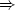

AboutHomeIntroduction Overview Features Screenshots DownloadsSource CodeExecutables Worldwide Scenery SupportVersion SummaryHardware Requirements Documentation Places to Fly Mailing Lists FAQ LinksRelated WebsitesRelated Projects ContributeContributingCVS Resources Goals Contributors Design Proposals Events |
HREF="getstartch5.html" >[next] [prev] [prev-tail] [end] [up]
Chapter 4
|
LD_LIBRARY_PATH=/usr/local/FlightGear/lib:$LD_LIBRARY_PATH export LD_LIBRARY_PATH/ |
or on C shell (compatibles):
setenv LD_LIBRARY_PATH /usr/local/FlightGear/lib:$LD_LIBRARY_PATH |
Besides this (used by the dynamic linker) ”fgfs” knows about the following environment variable:
FG_ROOT: root directory for the FlightGear base package,
which corresponds to the --fg-root=path option as described in Sec. 4.4.1
For launching FlightGear from Windows explorer, change to the directory /FlightGear and double-click the file runfgfs.bat. You can also pass command line options from Sec. 4 to the batch file (if running it form a Command shell). However, you have to enclose them in double quotes in this case as follows:
runfgfs.bat ''--aircraft=4a-yasim'' ''--airport-id=KLAX''.
Fig. 3: Ready for takeoff. Waiting at the default startup position at San Francisco Itl., KSFO.
Alternatively, if for one or the other reason the batch file above does not work or is missing, you can open a command shell, change to the directory where your binary resides (typically something like c:/FlightGear/bin where you might have to substitute c: in favor of your FlightGear directory), set the environment variable via (note the backslashes!)
SET FG_ROOT=c:\FlightGear\
and invoke FlightGear (within the same Command shell, as environment settings are only valid locally within the same shell) via
fgfs --option1 --option2....
Of course, you can create your own runfgfs.bat with Windows Editor using the two lines above.
For getting maximum performance it is recommended to minimize (iconize) the text output window while running FlightGear.
Say, you downloaded the base package and binary to your home directory. Then you can open Terminal.app and execute the following sequence:
setenv FG_ROOT /fgfs-base-X.X.X ./fgfs-X.X.X.-date
--option1 -- option 2 (one line)
or
./fgfs-X.X.X-version-date --fg-root=fgfs-base-X.X.X
--option1 --option2. (one line)
Following is a complete list and short description of the numerous command line options available for FlightGear. If you are running FlightGear under Windows you can include these into runfgfs.bat.
However, in case of options you want to re-use continually it is recommended to include them into a file called .fgfsrc under Unix systems and system.fgfsrc, resp. under Windows. This file has to be in the top FlightGear directory (for instance /usr/local/Flightgear). As it depends on your preferences, it is not delivered with FlightGear, but can be created with any text editor (notepad, emacs, vi, if you like).
Note: These options are rather geared to the advanced user who knows what he is doing.
Could you imagine a pilot in his or her Cessna controlling the machine with a keyboard alone? For getting the proper feeling of flight you will need a joystick/yoke plus rudder pedals, right? However, the combination of numerous types of joysticks, flightsticks, yokes, pedals etc. on the market with the several target operating systems, makes joystick support a nontrivial task in FlightGear.
Beginning with version 0.8.0, FlightGear has a reworked integrated joystick support, which automatically detects any joystick, yoke, or pedals attached. Just try it! If this does work for you, lean back and be happy!
Unfortunately, given the several combinations of operating systems supported by FlightGear (possibly in foreign languages) and joysticks available, chances are your joystick does not work out of the box. Basically, there are two alternative approaches to get it going, with the first one being preferred.
/FlightGear/joysticks.xml
which tells FlightGear where to look for all the bindings files. We will look at examples later.
FlightGear includes several such bindings files for several joystick manufacturers in folders named for each manufacturer. For example, if you have a CH Products joystick, look in the folder
/FlightGear/Input/Joysticks/CH
for a file that might work for your joystick. If such a file exists and your joystick is working with other applications, then it should work with FlightGear the first time you run it. If such a file does not exist, then we will discuss in a later section how to create such a file by cutting and pasting bindings from the examples that are included with FlightGear.
dmesg | grep Joystick
which pipes the boot message to grep which then prints every line in the boot message that contains the string ”Joystick”. When you do this with a Saitek joystick attached, you will see a line similar to this one:
input0: USB HID v1.00 Joystick [SAITEK CYBORG 3D USB] on usb2:3.0 This line tells us that a joystick has identified itself as SAITEK CYBORG 3D USB to the operating system. It does not tell us that the joystick driver sees your joystick. If you are working under Windows, the method above does not work, but you can still go on with the next paragraph.
$ cd /usr/local/FlightGear/bin
$ ./js demo
Under Windows, open a command shell (StartAll Programs Accessories), go to the
FlightGear binary folder and start the program as follows (given FlightGear is installed
under c:\Flightgear)
Accessories), go to the
FlightGear binary folder and start the program as follows (given FlightGear is installed
under c:\Flightgear)
cd \FlightGear\bin
js demo.exe
On our system, the first few lines of output are (stop the program with C if it is quickly scrolling past your window!) as follows:
Joystick test program.
Joystick 0: ''CH PRODUCTS CH FLIGHT SIM YOKE USB ''
Joystick 1: ''CH PRODUCTS CH PRO PEDALS USB''
Joystick 2 not detected
Joystick 3 not detected
Joystick 4 not detected
Joystick 5 not detected
Joystick 6 not detected
Joystick 7 not detected
+--------------------JS.0----------------------+--------------------JS.1----------------------+
| Btns Ax:0 Ax:1 Ax:2 Ax:3 Ax:4 Ax:5 Ax:6 | Btns Ax:0 Ax:1 Ax:2 |
+----------------------------------------------+----------------------------------------------+
| 0000 +0.0 +0.0 +1.0 -1.0 -1.0 +0.0 +0.0 . | 0000 -1.0 -1.0 -1.0 . . . . . |
First note that js demo reports which number is assigned to each joystick recognized
by the driver. Also, note that the ”name” each joystick reports is also included between
quotes. We will need the names for each bindings file when we begin writing the binding
xml files for each joystick.
The buttons are handled internally as a binary number in which bit 0 (the least significant bit) represents button 0, bit 1 represents button 1, etc., but this number is displayed on the screen in hexadecimal notation, so:
0001  button 0 pressed
0002 button 1 pressed
0004 button 2 pressed
0008 button 3 pressed
0010 button 4 pressed
0020 button 5 pressed
0040 button 6 pressed
... etc. up to ...
8000 button 15 pressed
... and ...
0014 buttons 2 and 4 pressed simultaneously
... etc.
For Linux users, there is another option for identifying the ”name” and the numbers assigned to each axis and button. Most Linux distributions include a very handy program, ”jstest”. With a CH Product Yoke plugged into the system, the following output lines are displayed by jstest:
jstest /dev/js3
Joystick (CH PRODUCTS CH FLIGHT SIM YOKE USB) has 7 axes and 12 buttons. Driver version is 2.1.0
Testing...(interrupt to exit)
Axes: 0: 0 1: 0 2: 0 3: 0 4: 0 5: 0 6: 0 Buttons: 0:off 1:off 2:off 3:on 4:off 5:off 6:off 7:off 8:off
9:off 10:off 11:off
Note the ”name” between parentheses. This is the name the system associates with
your joystick.
When you move any control, the numbers change after the axis number corresponding to that moving control and when you depress any button, the ”off” after the button number corresponding to the button pressed changes to ”on”. In this way, you can quickly write down the axes numbers and button numbers for each function without messing with binary.
Make the following table from what you learned from js demo or jstest above (pencil and paper is fine). Here we assume there are 5 axes including 2 axes associated with the hat.
| Axis | Button |
| elevator = 0 | view cycle = 0 |
| rudder = 1 | all brakes = 1 |
| aileron = 2 | up trim = 2 |
| throttle = 3 | down trim = 3 |
| leftright hat = 4 | extend flaps = 4 |
| foreaft hat = 5 | retract flaps = 5 |
| decrease RPM = 6 | |
| increase RPM = 7 |
We will assume that our hypothetical joystick supplies the ”name” QUICK STICK 3D USB to the system and driver. With all the examples included with FlightGear, the easiest way to get a so far unsupported joystick to be auto detected, is to edit an existing binding xml file. Look at the xml files in the sub-folders of /FlightGear/Input/Joysticks/. After evaluating at several of the xml binding files supplied with FlightGear, we decide to edit the file
/FlightGear/Input/Joysticks/Saitek/Cyborg-Gold-3d-USB.xml.
This file has all the axes functions above assigned to axes and all the button functions above assigned to buttons. This makes our editing almost trivial.
Before we begin to edit, we need to choose a name for our bindings xml file, create the folder for the QS joysticks, and copy the original xml file into this directory with this name.
$ cd /usr/local/FlightGear/Input/Joysticks
$ mkdir QS
$ cd QS
$ cp /usr/local/FlightGear/Input/Joysticks/Saitek/
Cyborg-Gold-3d-USB.xml QuickStick.xml
Here, we obviously have supposed a Linux/UNIX system with FlightGear being
installed under /usr/local/FlightGear. For a similar procedure under Windows
with FlightGear being installed under c:FlightGear, open a command shell and
type
c:
cd /FlightGear/Input/Joysticks
mkdir QS
cd QS
copy /FlightGear/Input/Joysticks/Saitek/
Cyborg-Gold-3d-USB.xml QuickStick.xml
Next, open QuickStick.xml with your favorite editor. Before we forget to
change the joystick name, search for the line containing <name>. You should find the
line
<name>SAITEK CYBORG 3D USB</name>
and change it to
<name>QUICK STICK 3D USB</name>.
This line illustrates a key feature of xml statements. They begin with a <tag> and end with a </tag>.
You can now compare your table to the comment table at the top of your file copy. Note that the comments tell us that the Saitek elevator was assigned to axis 1. Search for the string
<axis n="1">
and change this to
<axis n="0">.
Next, note that the Saitek rudder was assigned to axis 2. Search for the string
<axis n="2">
<axis n="1">.
Continue comparing your table with the comment table for the Saitek and changing the axis numbers and button numbers accordingly. Since QUICKSTICK USB and the Saitek have the same number of axes but different number of buttons, you must delete the buttons left over. Just remember to double check that you have a closing tag for each opening tag or you will get an error using the file.
Finally, be good to yourself (and others when you submit your new binding file to a FlightGear developers or users archive!), take the time to change the comment table in the edited file to match your changed axis and button assignments. The new comments should match the table you made from the js demo output. Save your edits.
/FlightGear/joysticks.xml,
adding a line that will include your new file if the ”name” you entered between the name tags matches the name supplied to the driver by your joystick. Add the following line to joysticks.xml.
<js-named include="Input/Joysticks/QS/QuickStick.xml"/>
The first one concerns users of non-US Windows versions. As stated above, you can get the name of the joystick from the program js demo. If you have a non-US version of Windows and the joystick .xml files named above do not contain that special name, just add it on top of the appropriate file in the style of
<name>Microsoft-PC-Joysticktreiber </name>
No new entry in the base joysticks.xml file is required.
Unfortunately, there is one more loophole with Windows joystick support. In case you have two USB devices attached (for instance a yoke plus pedals), there may be cases, where the same driver name is reported twice. In this case, you can get at least the yoke to work by assigning it number 0 (out of 0 and 1). For this purpose, rotate the yoke (aileron control) and observe the output of js demo. If figures in the first group of colons (for device 0) change, assignment is correct. If figures in the second group of colons (for device 1) change, you have to make the yoke the preferred device first. For doing so, enter the Windows ”Control panel”, open ”Game controllers” and select the ”Advanced” button. Here you can select the yoke as the ”Preferred” device. Afterward you can check that assignment by running js demo again. The yoke should now control the first group of figures.
Unfortunately, we did not find a way to get the pedals to work, too, that way. Thus, in cases like this one (and others) you may want to try an alternative method of assigning joystick controls.
For configuring your joystick using this approach, open a command shell (command prompt under windows, to be found under Start—All programs—Accessories). Change to the directory /FlightGear/bin via e.g. (modify to your path)
cd c:\FlightGear\bin
and invoke the tool fgjs via
./fgjs
on a UNIX/Linux machine, or via
fgjs
on a Windows machine. The program will tell you which joysticks, if any, were detected. Now follow the commands given on screen, i.e. move the axis and press the buttons as required. Be careful, a minor touch already ”counts” as a movement. Check the reports on screen. If you feel something went wrong, just re-start the program.
After you are done with all the axis and switches, the directory above will hold a file called fgfsrc.js. If the FlightGear base directory FlightGear does not already contain an options file .fgfsrc (under UNIX)/system.fgfsrc (under Windows) mentioned above, just copy
fgfsrc.js into .fgfsrc (UNIX)/system.fgfsrc (Windows)
and place it into the directory FlightGear base directory FlightGear. In case you already wrote an options file, just open it as well as fgfsrc.js with an editor and copy the entries from fgfsrc.js into .fgfsrc/system.fgfsrc. One hint: The output of fgjs is UNIX formatted. As a result, Windows Editor may not display it the proper way. I suggest getting an editor being able to handle UNIX files as well (and oldie but goldie in this respect is PFE, just make a web search for it). My favorite freeware file editor for that purpose, although somewhat dated, is still PFE, to be obtained from
http://www.lancs.ac.uk/people/cpaap/pfe/.
The the axis/button assignment of fgjs should, at least, get the axis assignments right, its output may need some tweaking. There may be axes moving the opposite way they should, the dead zones may be too small etc. For instance, I had to change
--prop:/input/joysticks/js[1]/axis[1]/binding/factor=-1.0
into
--prop:/input/joysticks/js[1]/axis[1]/binding/factor=1.0
(USB CH Flightsim Yoke under Windows XP). Thus, here is a short introduction into the assignments of joystick properties.
Basically, all axes settings are specified via lines having the following structure:
--prop:/input/joysticks/js[n]/axis[m]/binding
/command=property-scale (one line)
--prop:/input/joysticks/js[n]/axis[m]/binding
/property=/controls/steering option (one line)
--prop:/input/joysticks/js[n]/axis[m]/binding
/dead-band=db (one line)
--prop:/input/joysticks/js[n]/axis[m]/binding
/offset=os (one line)
--prop:/input/joysticks/js[n]/axis[m]/binding
/factor=fa (one line)
where
| n | = | number of device (usually starting with 0) |
| m | = | number of axis (usually starting with 0) |
| steering option | = | elevator, aileron, rudder, throttle, mixture, pitch |
| dead-band | = | range, within which signals are discarded; |
| useful to avoid jittering for minor yoke movements | ||
| offset | = | specifies, if device not centered in its neutral position |
| factor | = | controls sensitivity of that axis; defaults to +1, |
| with a value of -1 reversing the behavior |
You should be able to at least get your joystick working along these lines. Concerning all the finer points, for instance, getting the joystick buttons working, John Check has written a very useful README being included in the base package to be found under FlightGear/Docs/Readme/Joystick.htm. In case of any trouble with your input device, it is highly recommended to have a look into this document.
The following is a Table 1 of all the aircraft presently available for use with FlightGear. In the first column, you will find the name of the aircraft, the second one tells the start option, the third one names the FDM (flight dynamics management model, see Sec. 1.4), and the last column includes some remarks. Here, ”no exterior model” means, that there is no aircraft specific external model provided with the base package. As a result, you will see the default blue-yellow glider, when you change to the external view. However, you can download external views for these models from Wolfram Kuss’ site at
http://home.t-online.de/home/Wolfram.Kuss/.
Moreover, this list is complete insofar as it covers all aircraft available via the --aircraft= option.
Tab. 1: Presently available aircraft in FlightGear.
| Aircraft type | Start option | FDM | Remarks |
| Boeing 747 | --aircraft=747-yasim | YASim | |
| BA A4 Hawk | --aircraft=a4-yasim | YASim | |
| North American X-15 | --aircraft=X15 | JSBSim | experimental supersonic plane |
| Airwave Xtreme 150 | --aircraft=airwaveXtreme150- | ||
| v1-nl-uiuc | UIUC | hang glider! | |
| Beech 99 | --aircraft=beech99-v1-uiuc | UIUC | no exterior model |
| Cessna 172 | --aircraft=c172-3d | JSBSim | sports a 3D cockpit |
| Cessna 172 | --aircraft=c172-3d-yasim | YASim | sports a 3D cockpit |
| Cessna 172 | --aircraft=c172-ifr | JSBSim | with IFR panel |
| Cessna 172 | --aircraft=c172-larcsim | LaRCsim | |
| Cessna 172 | --aircraft=c172 | JSBSim | default |
| Cessna 172 | --aircraft=c172-yasim | YASim | |
| Cessna 172p | --aircraft=c172p-3d | JSBSim | sports a 3D cockpit |
| Cessna 172p | --aircraft=c172p | JSBSim | |
| Cessna 172 | --aircraft=c172x | JSBSim | flight dynamics testbed |
| Cessna 182 | --aircraft=c182 | JSBSim | |
| Cessna 310 | --aircraft=c310 | JSBSim | |
| Cessna 310 | --aircraft=c310-yasim | YASim | twin-prop machine |
| Cessna 310U3A | --aircraft=c310u3a-3d | JSBSim | twin-prop machine, 3D cockpit |
| Cessna 310U3A | --aircraft=c310u3a | JSBSim | twin-prop machine |
| Douglas DC-3 | --aircraft=dc3-yasim | YASim | |
| BA Harrier | --aircraft=harrier-yasim | YASim | no exterior model |
| Piper Cub J3 Trainer | --aircraft=j3cub-yasim | YASim | |
| Siai Marchetti S.211 | --aircraft=marchetti-v1-uiuc | UIUC | no exterior model |
| Space Shuttle | --aircraft=shuttle | JSBSim | no exterior model |
| UFO | --aircraft=ufo | JSBSim | ’White Project’ (UNESCO) |
| 1903 Wright Flyer | --aircraft=wrightFlyer1903- | ||
| v1-nl-uiuc | UIUC | historical model | |
| X-24B | --aircraft=x24b | JSBSim | USAF/NACA reentry testbed |
| Cessna 172 | --aircraft=c172-610x | JSBSim | full screen, hi-res panel (IFR) |
| UFO | --aircraft=ufo | Magic Carpet | UFO |